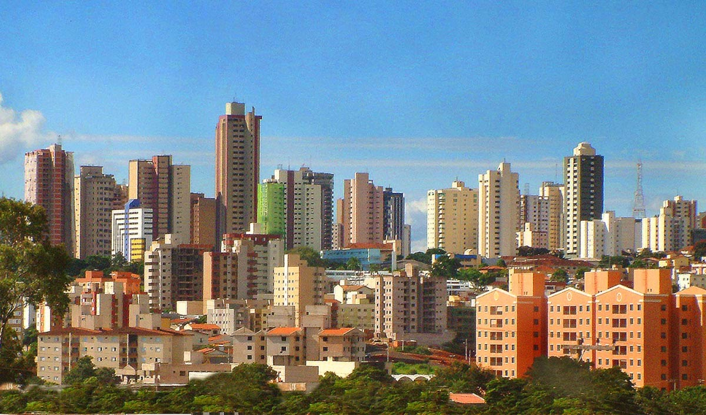

Uberlândia é um municipio brasileiro no interior do estado de Minas Gerais, na região conhecida como Triângulo Mineiro, Região Sudeste do país. Com 713 224 habitantes, segundo o Censo 2022 do Instituto Brasileiro de Geografia e Estatística (IBGE), é o 2° município mais populoso de Minas Gerais (Lista de municípios de Minas Gerais por população).
Distante 537 quilômetros da capital estadual, Belo Horizonte, a região de Uberlândia era habitada por índios caiapós e bororós até a chegada do bandeirante Bartolomeu Bueno da Silva, em 1632. No final da década de 1880, o município de São Pedro de Uberabinha se emancipou de Uberaba, mas foi apenas em 1929 que a cidade passou a ser chamada de "Uberlândia". Após a emancipação, houve um grande crescimento da área urbana da cidade, sendo que, no início do século XX, a Uberlândia já possuía uma diversificação nos ramos industriais.
"